|
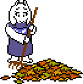 |
秋です！ということは…！ |
|
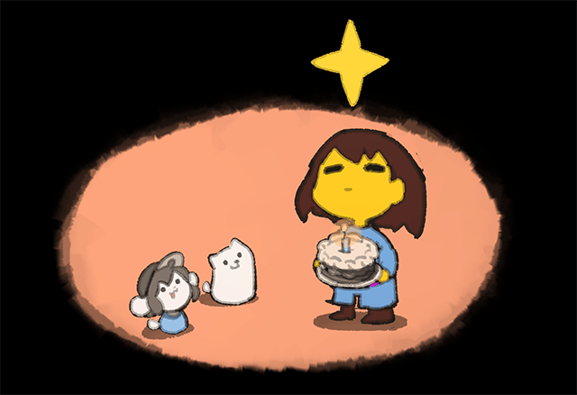 （アート・スプライト by テミー） |
…そう、『UNDERTALE』がリリースされて、8周年を迎えました！ |
残念ながら、今年はブッ飛んだイベントを企画する余力がありません… |
だから今年は…「とにかく寝たい」！ |
|
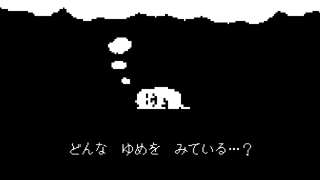 ビデオを見る » |
Tシャツとブランケットは、予約注文1点につき、価格の20％が「AbleGamers」というチャリティ団体に寄付されます。みんな、パジャマがわりのTシャツ、もう1着ぐらい欲しいでしょ？ |
それと、この場を借りて、あらためて… |
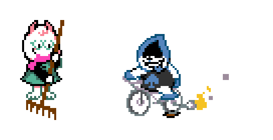 |
現在、開発チームは、引き続きChapter 3の制作に取り組んでいます！ |
じつは今回、ステルスプレイ中心のセクションを入れようという案もあって、特定のエリアを移動するときは、すご～～～くゆっくり、忍び足で進まないといけなくなる予定でした。 |
でも、いろんなアイデアを形にしていったら、ただゆっくり進まなきゃいけないだけのシステムって、そんなに楽しくもないな、と気づいて… |
…やっぱりやめました。 |
そんなわけで、よろしければこちらの曲をお聴きください。 |
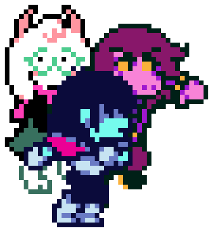 |
ついに、発表されました…！ |
東方Projectのクリエイター、ZUNさんと、曲を共作させていただきました！東方Project公認の二次創作ゲーム『東方ダンマクカグラ ファンタジア・ロスト』に、2人で作った曲が登場します！ |
僕がその公式発表をしたときの動画、まだ見てない人は、こちらからどうぞ！ |
|
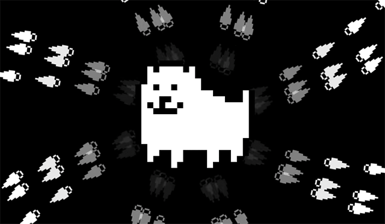 ビデオを見る » |
知らない人のために説明すると、東方Projectというのは、キュートな魔法少女キャラたちが芸術的な弾幕を撃ちあう、シューティングゲームの作品群です。ユーロビートに和風テイストを融合させた美しく叙情的なBGMも人気で、僕は小学生のころから東方Projectの影響を受けまくってきました。『UNDERTALE』と『DELTARUNE』の戦闘システムが弾幕系なのは、東方Projectがあったからと言っても過言じゃありません。 |
しかも、アンダイン戦のBGMで使ってる楽器は、東方Projectへのオマージュなんですよ！それが今回、ZUNさんと曲を共作することになって、その曲の半分以上がZUNさんアレンジのアンダインの曲で構成されてるって…ちょっとすごくないですか？いや～、夢って、かなうんですね！ |
この公式発表動画は、『東方ダンマクカグラ』のYouTubeチャンネルで生配信されたイベントで流してもらったものなんですが、この配信イベントも最高でした。東方の二次創作曲で有名なミュージシャンが次々登場して生ライブしてくれて、しかもZUNさんご本人がMCとして登場して、そして… |
…僕も、当日客席で観覧してました！ |
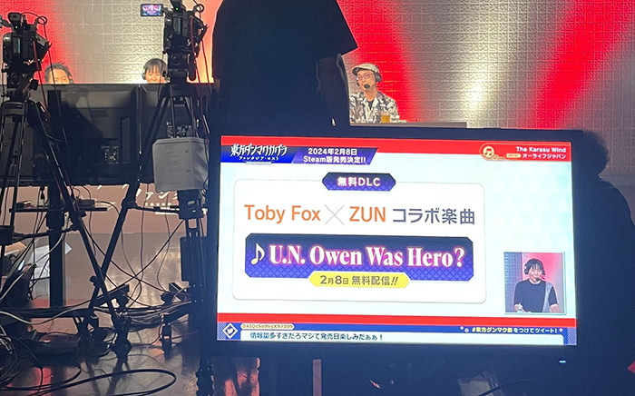 |
{kind=link}
（注意：このセクションの内容は、『UNDERTALE』『DELTARUNE』とは関係ありません。…なので、マニアックコースの方限定です！） |
そんなわけで、今回、曲を作ったお礼にと、ダンマクカグラチームのみなさんが僕を日本に招待してくれて、生配信イベントを会場で観覧させてくれました！ |
会場に着くと、スタッフさんがバックステージに案内してくれたんですが、そこに並ぶ楽屋では、出演者のみなさんがくつろいでました。各部屋のドアには、「ZUN様」とか、「まらしぃ様」とか、「COOL&CREATE様」とか、名前が書いてあって、どんどん進んでいくと…「トビー・フォックス様」って書いてあるドアが！そう、なぜか、僕専用の楽屋まで用意されてたんです。出演者じゃないのに… |
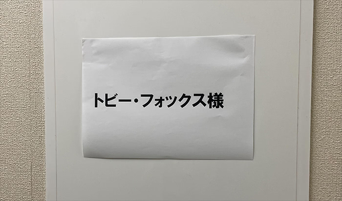 |
しばらくするとZUNさんがやってきて、少しだけお話できました。前に何回か会ったことはあったけど、あまりに昔のことで、ZUN経験値がすっかりゼロに戻っていた僕は、超初心者からやり直しでした。 |
トビー：… |
ZUN：… |
トビー：えっと、僕、東方やりすぎると、なんでも弾幕みたいに思えてきちゃうんですよね。人混みを歩くときは、ぶつからないように全員うまくよけながら歩かなきゃいけない気がしたり…車を運転してるときは、道が混んでると、他の車が弾に見えてきたり… |
ZUN：危ないよ！（笑） |
トビー：作ってるご本人は、いつもそんな感覚だったりしませんか？ |
ZUN：まあ、たしかに…なんでも東方に結びつけて考えがちだね。それはしょうがない。 |
ZUNさんは、すごく、すごく、すご～くお気遣いしてくださって、バンドの演奏者のみなさんにも僕を紹介してくれて…おかげで僕は、クールでクリエイティブな人たちにたくさんごあいさつできました。まさに、“COOL&CREATE”！ |
そのCOOL&CREATEのビートまりおさんは、特におもしろい人でした。小さいお子さん連れだったんですが、「おうち帰るー！帰るー！」なんて言いながら走り回ってるその子を抱き上げて、初めて会ったばかりの僕に押しつけて、抱っこさせようとするんです。何回も後ずさって逃げてたら、奥さんに「子どもは苦手？」って聞かれちゃいました… だけど僕は日本語の解釈を間違えて、「子どもを抱っこするのが下手なの？」って意味だと思って、「はい」って答えちゃったんです。そしたら奥さんは、お子さんを抱っこして、クルクル回したり、宙返りさせたりして、「ほら、簡単だよ。赤ちゃんじゃなくなったら、落っことさないかぎり、だいたい何しても平気」って。サーカスみたいですごいなぁ、って思って見てたんですが、「あ、ごめんなさい。子ども苦手なんだよね…？」って言われて、間違いに気づきました。あわてて訂正しようとしたけど、タイミングを逃してしまって… だからきっと、ビートまりおさんご夫婦には、今も誤解されたままだと思います… |
次にお会いしたのが、まらしぃさん。とんでもなく才能豊かなピアニストで、YouTubeに演奏動画をたくさん上げてる方です。この場に僕がいるのを見てすごくびっくりされて、「MEGALOVANIA」の天才的な演奏動画を見せてくれました。ZUNさんと僕はその5分ぐらいの動画を最初から最後まで全部見て、思わず拍手！「MEGALOVANIA」はもともと、僕が15歳のとき、とある適当プロジェクト用に作った曲だったんですが、それを誰かが演奏してくれて、東方のクリエイターさんといっしょに見られる日が来るなんて…考えれば考えるほど、現実感がないです… |
そうこうしてるうちに、配信がスタート。高校生のころから知ってる東方の二次創作曲たちを、目の前で生演奏してもらえるというのは、なんだかとても不思議で、最高にステキな体験でした。リアルで「助けて、えーりん！」って叫べて、大満足です。 |
まらしぃさんのピアノ演奏も、すごくグッときました。じつは僕、いろんなゲーム音楽を耳コピしてピアノで弾いて、作曲のしかたを覚えたんです。しかも、最初に覚えた何曲かは全部、東方の曲でした。まらしぃさんの「ネイティブフェイス」は、まるで当時の僕の「超絶完ペキバージョン」っていう感じで…本当にすばらしかったです。 |
配信終了後は、簡単な打ち上げパーティがありました。ZUNさんはイベント中からもうビールを6杯も飲んでたのに、打ち上げでもまだ飲んでました。僕はそんなにお酒飲めないので、ビールを1杯だけグーッといったら…あっというまにベロベロになって、COOL&CREATEのみなさんに、自分がどれだけ東方が好きかえんえん語ってしまいました。みんなやさしいから、逃げずにちゃんとうなずきながら聞いててくれました。 |
そのあと、ZUNさんといっしょにでっかい色紙に絵を描いてサインすることになったんですが、僕は自分のサインが思い出せなくなっちゃって… ただ線をいっぱい書くだけなんですけど、ちっとも書けないので、ZUNさんに「だいぶ酔っ払ってるでしょ」と笑われてしまいました。 |
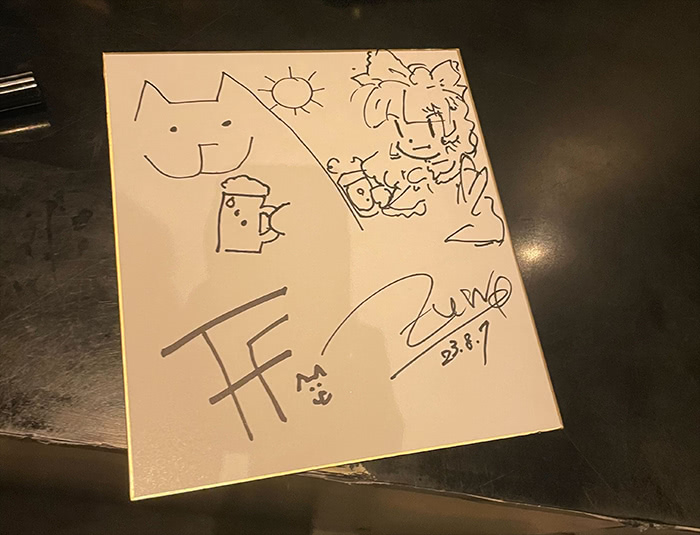 |
このサイン大会、じつは僕がテミーのためにZUNさんにサインをお願いしたことがきっかけで始まったんです。テミーにはまだナイショにしてるから、テミーはここ読まないでね。 |
打ち上げ中、ビートまりおさんに突然うしろからハグされたんですが、僕は完全なノーリアクションを貫きました。そばで見ていた人が「おお… BLの始まりだ…」って言うのを聞いて、昔アメリカのアニメ系イベントに行ったときのことを思い出しました（笑） |
そのあとはひたすら、いろんな人のスマホにサインしまくることに。僕はめったに人前に出ないので、こんなふうに有名人みたいなあつかいを受けることもめったになくて… でも、なんだかちょっと納得がいかなくて、ZUNさんに、「これ、ZUNさんのイベントですよね！？」って聞いてみました。そしたらZUNさんいわく、「みんなもう、僕には慣れてるからね」って。…つまり、僕がうしろからBLハグしてもらえるのも、今のうちってことですね。 |
ダンマクカグラのスタッフのみなさん、ZUNさん、ありがとうございました！忘れられない思い出が、たくさんできました… |
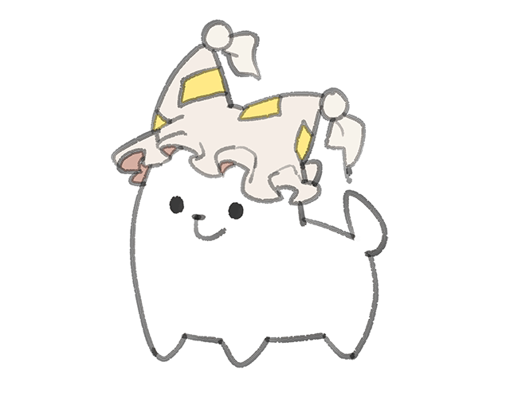 |
{kind=link}
{kind=link}
こんにちは、Chapter 2に登場した「スイート・キャップ・ケーキ」「タスクマネージャー」のデザイン担当のNelnalです。Chapter 2が配信されてからもう2周年という時の速さに驚きを隠せません。 |
DELTARUNEのChapter 1が配信された時私は数百万人以上居るトビーさんの作品のただのファンの端くれでしたので、初めて仕事のオファーがあった日に驚き過ぎてしばらく放心状態だったのを鮮明に覚えています。 |
今までさまざまなデザインの仕事に携わらせていただいてきましたが、DELTARUNEでのお仕事は内容が本当に面白くて、あんなに読んだ瞬間からアイデアが頭の中で次から次へと浮かんでくる資料は初めてでした。 |
結果3人とも採用という驚きの結果になって私も本当に嬉しかったです…！ |
そしてそんな愉快な3人組のグッズのイラストも担当させていただきました！ |
これはちょっとした小話ですが、3人が特に好きな音楽ジャンルはスイートはダブステップ、K_Kはエレクトロ、キャップはヒップホップらしいですよ。 |
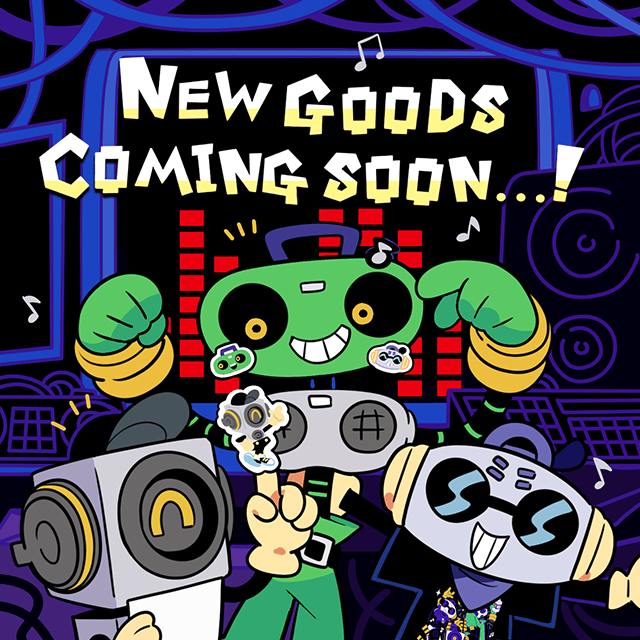 |
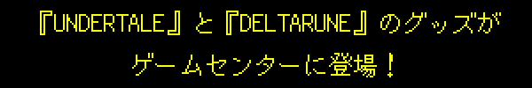 |
（＊ 巨大なクレーンに釣り上げられたイヌが あちこち運ばれている音がする） |
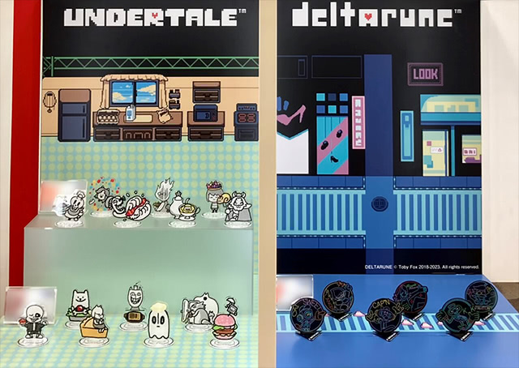 |
BANDAI SPIRITSさんから、『UNDERTALE』と『DELTARUNE』の新作グッズが発表されました！今後3つのシリーズが順次発売になって、ゲームセンターで景品としてゲットできます。 |
2023年12月発売 UNDERTALE スタンド付きアクリルプレート～FOOD DESIGN～vol.1（全7種） |
2024年1月発売 UNDERTALE スタンド付きアクリルプレート～FOOD DESIGN～vol.2（全7種） |
2024年1月発売 DELTARUNE スタンド付きアクリルプレート～NEON STYLE～（全6種） |
さらにさらに…2024年3月には、「人気のバトル」をテーマにした敵キャラのラバーマスコットも発売されます！ |
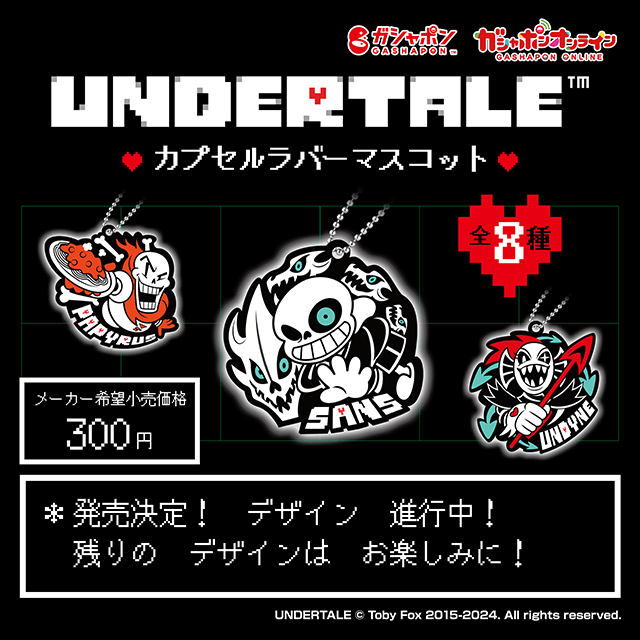 |
…なんだか宣伝ばっかりで、このメールがスパムフォルダーに入っちゃわないか、心配になってきました。切り離して使えるクーポンとか、つけたほうがいいかなぁ。あ！でも、パソコンの画面をハサミで切っちゃダメですよ…！ |
みんな、お目当てのキャラをゲットできるといいですね！ |
{kind=link}
取引先のとある会社から、『UNDERTALE』のキャラクターグッズにつける宣伝コピーの案が送られてきました。 |
「（このグッズを手に入れれば）キミはもう二度と地底を冒険しない！」 |
…もう二度と…？ |
…この人たち、僕に何する気…？ |
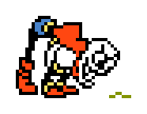 |
今季号も、読んでくれてありがとうございました！9年目も、どうぞよろしくお願いします！ |